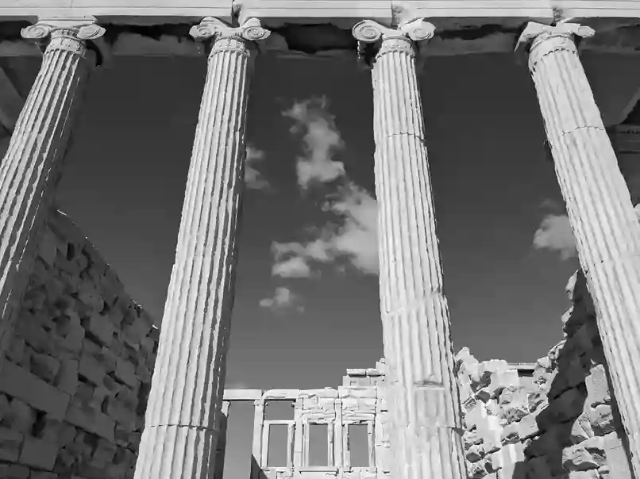

The Dialectic Wormhole
Ἀγεωμέτρητος μηδεὶς εἰσίτω.
No one shall enter without knowledge of the geometry.
Ohne Kenntnis der Geometrie soll keiner eintreten.
Launchpad
Startrampe
Entropy shifts order into chaos.
Not because this is necessary,
but because it is the most likely outcome. The pure destruction of geometry, whether physical or discursive, is a masculine act. To order what has been destroyed,
synthesizing it, is Gaía's legacy. Forcing the shattered geometry through a dialectical wormhole and reassembling it is the desideratum of this website.
Entropie verwandelt Ordnung in Chaos.
Nicht etwa, weil dies notwendig ist,
sondern weil es das wahrscheinlichste Ergebnis ist. Das reine Zerstören der Geometrie, ob physisch oder diskursiv, ist ein männlicher Akt. Das Zerstörte zu ordnen,
es zu synthetisieren, ist das Erbe der Gaía. Die zertrümmerte Geometrie durch ein dialektisches Wurmloch zu zwingen und sie wieder zusammenzusetzen, das ist das Desiderat dieser Website.

Nexus
Portfolio of my publications.
Portfolio meiner Arbeiten.
Sisyphos English
Load PDF
Sisyphos Deutsch
PDF laden
Abyss
Recommended content will appear here 123.
Speedboat towards the Panopticon.
Underground towards the Panopticon.
Night train towards Theseus Junction
Feuilleton mit empfohlenen Inhalten 123.
Schnellboot zum Panopticon.
U-Bahn zum Panopticon.
Nachtzug zur Theseus Junction
About this project
Über dieses Projekt
A short description of this web project.
Dear fellow travellers,
this website project aims to collect some interesting things that I would like to share in one place. I try to maintain and update the content regularly.
If you are interested in new content, you should visit the places (or non-places) on this website from time to time. This website is primarily based on single-page technology for speed, which is why you can only return to the home page via the "Launchpad" button.
This site is not a platform. Please note that I cannot and will not provide an infrastructure for comments. Contact information for more important matters can be found in the legal notice.
This site is ad-free, subscription-free and donation-free. Adblockers and VPNs are welcome. Get ready to explore the dialectical wormhole!
Dennis, Admin
Eine kurze Beschreibung dieses Webprojekts.
Werte Mitreisende,
dieses Website-Projekt verfolgt das Ziel, einige interessante Dinge zu sammeln, die ich an einem Ort teilen möchte. Ich versuche, die Inhalte regelmäßig zu pflegen und zu aktualisieren.
Wenn du an neuen Inhalten interessiert bist, solltest du von Zeit zu Zeit die Orte (oder Nicht-Orte) auf dieser Website besuchen. Diese Website basiert zur Beschleunigung primär auf Single-Page-Technologie, weshalb nur über den „Launchpad“-Button zur Startseite zurückgekehrt werden kann.
Diese Seite ist keine Plattform. Bitte beachtet, dass ich keine Infrastruktur für Kommentare bereitstellen kann und will. Kontaktinformationen für eher wichtige Anliegen findet ihr im Impressum.
Diese Seite ist werbefrei, abofrei und spendenfrei. Adblocker und VPNs dürfen gerne genutzt werden. Macht euch bereit, das dialektische Wurmloch zu erkunden!
Dennis, Admin